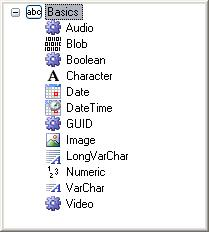

Newest Version
Basic data types
This category groups the
Basic
Data Types, as shown below.

Pages
Audio data type
Blob data type
BlobFile data type
Boolean data type
Character data type
Date data type
DateTime data type
DateTime data type (up to GeneXus 15 Upgrade 10)
GUID data type
GUID data type (X Evolution 1, 2 and 3)
Image data type
LongVarChar data type
LongVarChar data type (X Evolution 3)
Numeric data type
VarChar data type
VarChar data type (up to GeneXus 15 Upgrade 10)
Video data type